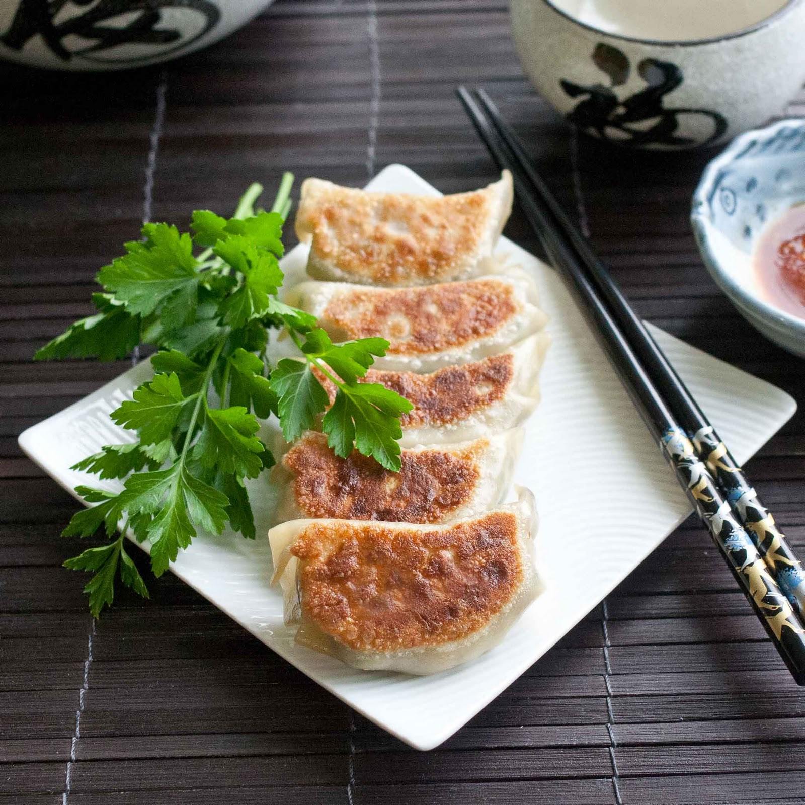

Pork Gyoza

Perfect Japanese-style finger food
Country of Origin : Japan
These delicious dumplings are great alone or in soups.
Ingredients List
- 4 cups Napa cabbage, minced and loosely packed
- ½ tsp salt
- 9 oz ground pork
- ½ tbsp ginger, freshly grated
- 2-3 cloves garlic, minced
- 1 tbsp scallion, green only, minced
- 2 tsp aka (red) miso paste
- 2 tsp sesame oil
- 1 tsp crushed red pepper flakes
- ½ tsp sugar
- 40 dumpling wrappers
- 6 tbsp soy sauce
- 3 tbsp rice vinegar
- chili oil, optional
Directions
- Toss cabbage and salt, let sit 10 minutes. Squeeze cabbage of excess water.
- Add cabbage to a deep bowl along with pork, ginger, garlic, scallion, miso, 1 tbsp sesame oil, pepper, and sugar. Mix with hands.
- Lay dumpling wrapper down, fill with a teaspoon of the mixture, and wet edges of the wrapper with your fingertips.
- fold wrapper in half, pinching at the middle continuing around the semi-circle created.
- In a large skillet with a lid, heat remaining seseme oil over medium high. Place in dumplings, without any touching each other.
- Cook 3 minutes, or until bottom is golden brown. Add ¼ cup water. Add ½ tsp seseme oil around edge of skillet, cover, and reduce heat to simmer.
- Check after 2 minutes for firm meat and translucent wrapper. Remove lid, raise heat, and evaporate remaining water.
- Shake the skillet, the dumplings should slide. Remove from heat.
- Mix soy sauce, vinegar, and optional oil as a dipping sauce. Serve.
Notes
Many countries have variations of dumpling. This Japanese style can be modified by changing the protein or even making your own dumpling wrappers.
<